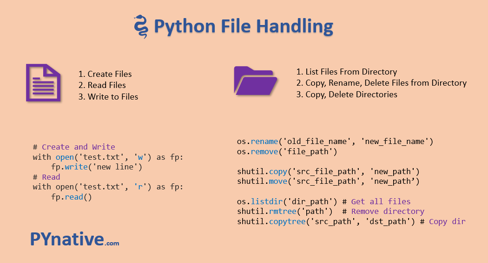
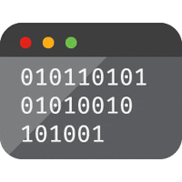
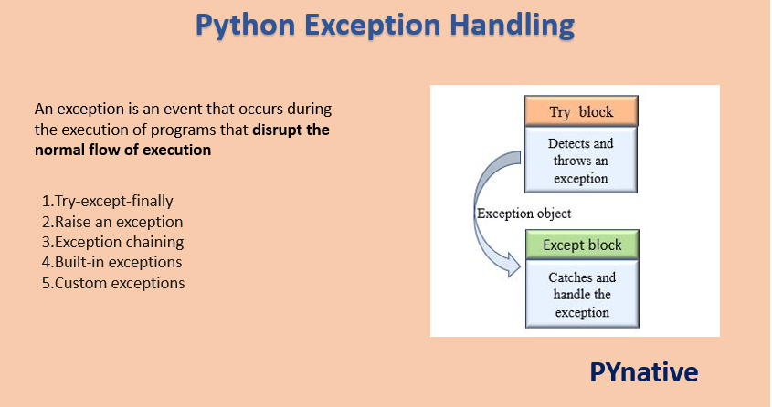
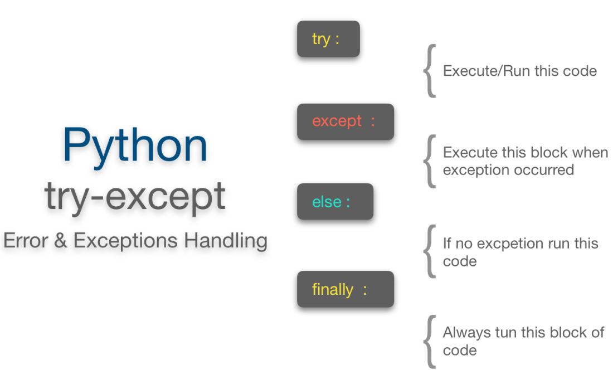
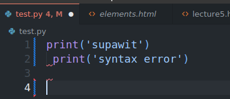
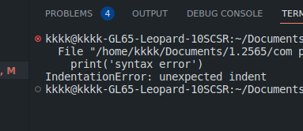
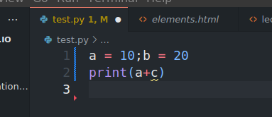
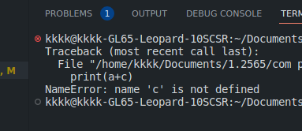

Lecture 6
Files and Exceptions
To store data temporarily and permanently, we use files. A file is the collection of data stored on a disk in one unit identified by filename.
-
WRITE DATA TO FILE
-
READ DATA FROM FILE



TYPE OF FILE
1. Text file contains encoded as text.
2. Binary file has not been converted to text. Two ways to access data in a file:
1. Sequential access: read one item at a time, in order.
2. Direct access: jump to any item in the file.-

File access modes 
| Mode | Description |
|---|---|
| r | It opens an existing file to read-only mode. The file pointer exists at the beginning. |
| rb | It opens the file to read-only in binary format. The file pointer exists at the beginning. |
| r+ | It opens the file to read and write both. The file pointer exists at the beginning. |
| rb+ | It opens the file to read and write both in binary format. The file pointer exists at the beginning of the file. |
| w | It opens the file to write-only mode. If the file does not exist, it creates a new file. If the file exists, it truncates the file. |
| wb | It opens the file to write-only in binary format. If the file does not exist, it creates a new file. If the file exists, it truncates the file. |
| w+ | It opens the file to read and write both. If the file does not exist, it creates a new file. If the file exists, it truncates the file. |
| wb+ | It opens the file to read and write both in binary format. If the file does not exist, it creates a new file. If the file exists, it truncates the file. |
| a | It opens the file to write-only mode. If the file does not exist, it creates a new file. The file pointer is at the end of the file if the file exists. That is, the file is in the append mode. |
| ab | It opens the file to write-only in binary format. If the file does not exist, it creates a new file. The file pointer is at the end of the file if the file exists. That is, the file is in the append mode. |
| a+ | It opens the file to read and write both. If the file does not exist, it creates a new file. The file pointer is at the end of the file if the file exists. That is, the file is in the append mode. |
| ab+ | It opens the file to read and write both in binary format. If the file does not exist, it creates a new file. The file pointer is at the end of the file if the file exists. That is, the file is in the append mode. |
OPEN FILE
To open a file, we use the open function. The open function returns a file object.
file_variable = open(filename , mode)
file mode is optional. If not specified, the default is read-only.
'r' - read mode
'w' - write mode
'a' - append mode ,If the file does not exist, it is created.

PYTHON FILE WRITE
To write content into a file, Use the access mode w to open a file in a write mode.
Note: If a file already exists, it truncates the existing content and places the filehandle at the beginning of the file. A new file is created if the mentioned file doesn’t exist. If you want to add content at the end of the file, use the access mode a to open a file in append mode


PYTHON FILE READ
To read or write a file, we need to open that file. For this purpose, Python provides a built-in functionopen()Pass file path and access mode to theopen(file_path, access_mode)function. It returns the file object. This object is used to read or write the file according to the access mode.


-
Method manage with file
| Method | Description |
|---|---|
| read() | It reads the content of the file and returns it as a string. |
| readline() | It reads the content of the file line by line and returns it as a string. |
| readlines() | It reads the content of the file line by line and returns it as a list of strings. |
| write() | It writes the content into the file. |
| writelines() | Writes a list of strings to the file. |
| close() | It closes the file. |
| tell() | It returns the current position of the file handle. |
FILE READLINE 
The readline method reads a single line from the file. Each time the method is called, it reads the next line in the file.


WRITE NUMBERS


READ NUMBERS


-
USING LOOPS TO WRITE FILE
We can use a loop to read the lines in a file. The loop continues until the end of the file is reached.(empty string is returned.)


USING LOOP TO READ FILE
-
Use For
-
Use While


PROCESSING RECORD
When working with records,Important to be able this.
- Add records

- Display records

- Search specific record


- Modify record

- Delete record

REMOVE,RENAME

-
EXCEPTIONS
An exception is an error that occurs during the execution of a program. When an exception occurs, the program stops and displays an error message.
Exception are useful to indicate different types of possible failure condition. For example, bellow are the few standard exceptions
FileNotFoundException
ImportError
RuntimeError
NameError
TypeError


What are errors?
On the other hand, An error is an action that is incorrect or inaccurate. For example, syntax error. Due to which the program fails to execute.
The errors can be broadly classified into two types: 1.Syntax errors 2.Logical errors
-
The syntax error occurs when we are not following the proper structure or syntax of the language. A syntax error is also known as a parsing error.
Syntax error -
Example


-
Example


-
The logical error occurs when the program is syntactically correct but it does not produce the desired output. It is also known as a semantic error.
Logical error
Example1


If statement in try suite is true, the except suite is skipped.


Example2

-
ELSE CLAUSE
The else clause is executed if the try clause does not raise an exception. if the try clause raises an exception, the else clause is skipped.
Example


-
FINALLY CLAUSE
The finally clause is always executed before leaving the try statement, whether an exception has occurred or not. When an exception has occurred in the try clause and has not been handled by an except clause (or it has occurred in an except or else clause), it is re-raised after the finally clause has been executed. The finally clause is also executed “on the way out” when any other clause of the try statement is left via a break, continue or return statement.
Example


If exception is not handled
If an exception occurs and is not handled by an except clause, it is passed on to the next enclosing try statement. If no handler is found, the exception is an unhandled exception and execution stops with a message as shown below.
Thanks ! Goodluck
If you have any questions, please feel free to contact me.